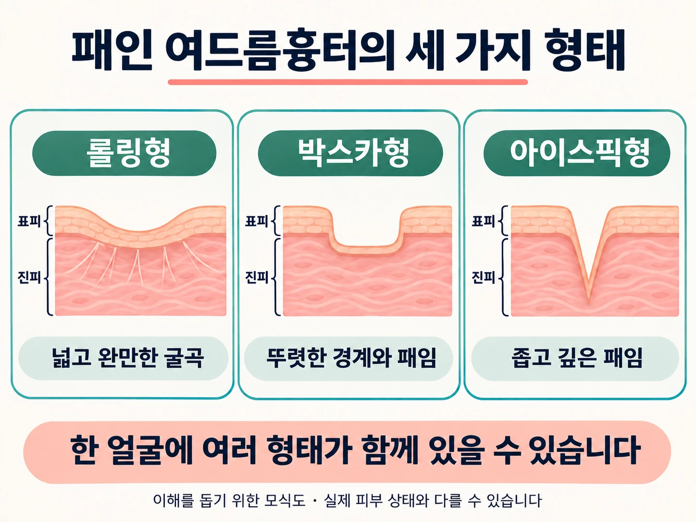
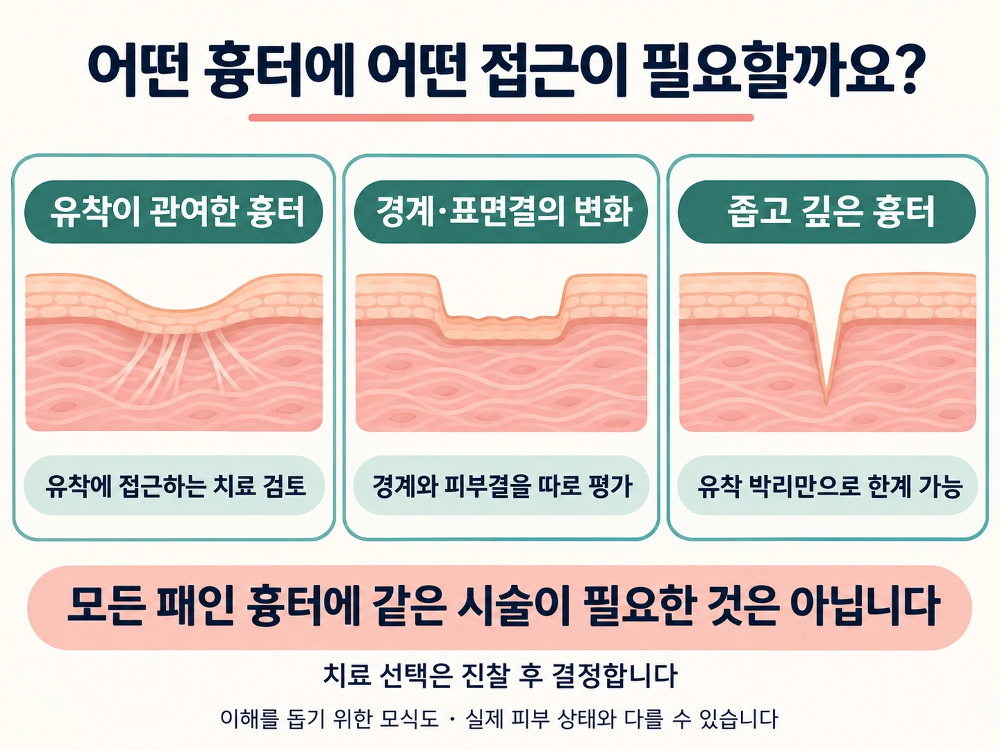

패인 여드름흉터가 여러 개 있다고 해서 모두 같은 흉터인 것은 아닙니다. 같은 얼굴에서도 넓게 꺼진 부위와 작은 구멍처럼 파인 부위가 섞여 나타날 수 있습니다. 따라서 치료계획은 얼굴 전체에 하나의 시술 이름을 붙이는 방식보다, 흉터의 특징을 나누어 살피는 과정에서 시작해야 합니다.

넓고 완만하게 꺼진 롤링형 흉터
롤링형은 넓고 완만한 굴곡을 보이는 흉터로, 서브시전이 다른 위축성 흉터보다 효과적인 대상으로 설명되는 유형입니다. 아래에서 잡아당기는 섬유성 연결이 관여한다면 이를 풀어주는 접근을 고려할 수 있습니다.
다만 겉으로 넓게 꺼졌다고 해서 모두 같은 정도의 유착이 있는 것은 아닙니다. 피부를 당겼을 때의 변화 등도 진찰에 참고하지만, 이러한 반응 하나만으로 시술 필요성을 확정하지는 않습니다.
경계가 뚜렷한 박스카형 흉터
박스카형은 주변 피부와 패인 부위의 경계가 비교적 분명합니다. 이때는 바닥의 패임뿐 아니라 가장자리의 높이 차이도 눈에 띄는 원인이 됩니다.
유착이 관여하는 부위에는 박리 접근을 검토할 수 있지만, 바닥이 개선되어도 경계가 남으면 흉터가 여전히 도드라져 보일 수 있습니다. 따라서 패임과 가장자리, 주변 피부결을 나누어 평가할 필요가 있습니다.
작지만 깊은 아이스픽형 흉터
아이스픽형은 입구가 좁고 깊게 파인 형태입니다. 깊은 아이스픽형이나 벽이 가파른 깊은 박스카형은 유착을 끊는 접근만으로 충분한 개선을 얻기 어려워 다른 치료가 중심이 될 수 있습니다.
작은 흉터가 반드시 쉬운 흉터는 아니라는 뜻입니다. 겉에서 보이는 크기보다 깊이와 구조가 더 중요한 경우도 있습니다.

복합치료가 필요한 이유는 역할이 다르기 때문입니다
흉터 아래의 유착, 피부의 패임, 경계, 표면의 질감, 붉거나 갈색인 자국은 서로 다른 문제입니다. 한 가지 시술로 이 모든 부분을 같은 정도로 개선하기는 어렵습니다.
그렇다고 여러 시술을 많이 받을수록 무조건 좋은 것은 아닙니다. 병행치료는 각각 무엇을 개선하려는지 설명할 수 있어야 합니다. 추가 시술의 부담과 부작용도 함께 고려해야 합니다.
또한 레이저를 단순히 ‘피부를 깎는 치료’로만 설명하는 것은 정확하지 않습니다. 레이저 역시 종류에 따라 작용 방식이 다르므로, 새살침과 레이저를 일률적인 경쟁 관계로 볼 필요는 없습니다.
좋은 치료계획은 모든 흉터에 같은 시술을 반복하는 계획이 아니라, 필요한 부위와 그렇지 않은 부위를 구분하는 계획입니다.
다음 회에서는 시술 후 회복 과정과 주의해야 할 신호를 살펴보겠습니다.
참고자료
- 서브시전 관련 문헌, Wiley Online Library (onlinelibrary.wiley.com)